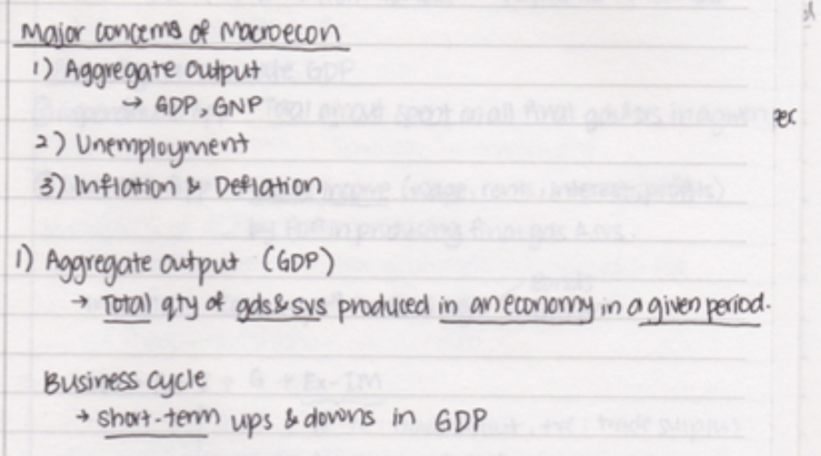
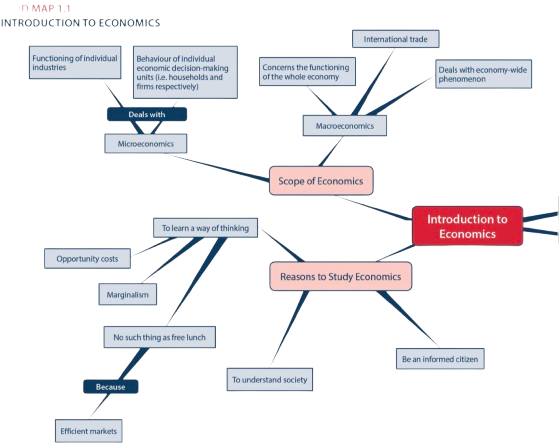

Practical tips
-
Read and Print Your Lecture Slides
If you can print out your lecture slides in advance, do it. Take a few minutes—maybe on the bus—to skim them before the lecture. This quick review makes the material familiar and helps you avoid writing down things you don’t need to. It’s a small step that gives you a head start. -
Remember, Your Notes Are for Your Eyes Onlys
Your notes are just for you, so don’t stress about making them look perfect. Use colors and underline where it helps, but don’t worry if they’re a bit messy. You can always rewrite them later, and that process alone helps reinforce what you’ve learned. Make them functional, not flawless. -
Graphs and Images to Emphasize Key Points
Notes don’t have to be all words—sometimes a graph or an image can bring your notes to life. Visuals like mind maps allow you to track your thought process and connect different ideas, which can be invaluable during revision. But remember, don’t spend too much time making it look pretty; focus on what’s useful. -
Capture the Essentials, Not Everything
When you understand a concept, like opportunity cost, don’t write down every example. Instead, relax and listen. If a phrase sums it up, use a phrase. If a single word works, stick with that. Keeping it brief helps you stay focused and absorb the material without getting bogged down in details. These four techniques can make note-taking feel a bit less daunting. Find the methods that work best for you, and let them keep you organized, engaged, and ready to tackle your studies with confidence.
Different methods of note-taking in Economics
Taking notes is more than just a habit; it's the backbone of your learning in economics. But let’s be real—it’s not always easy. You’re sitting in a fast-paced lecture or flipping through dense reading material, and trying to capture every critical point feels impossible. So, what’s the solution? Find a note-taking method that works for you, one that helps you stay organized, retain information, and make studying a little less daunting. Here are three powerful methods to try:
The Cornell Method
Imagine your notebook page split into three zones. On the left, a slim column for prompts and questions. On the right, a wide column for notes. And at the bottom, space for a summary. That’s the Cornell Method in action. This layout helps you break down complex lectures or readings into manageable chunks, distill the key points, and reflect on what you’ve learned. It’s perfect for content-heavy topics because it keeps the essentials right at your fingertips, ready for review.Outline Method
Think of the Outline Method as creating a roadmap of your lecture. Start with main headings, add subheadings, and then drill down with bullet points. This approach lets you see the structure of the material at a glance, with clear distinctions between big ideas and details. If your lecture has a logical flow, the Outline Method helps you follow along seamlessly, highlighting the main ideas and how they connect. It’s clean, it’s organized, and it’s ideal for lectures with a clear hierarchy.
The Mapping Method
Sometimes economics is like a web of interlocking concept. That’s where the Mapping Method shines. Grab a pen and start drawing: circles for concepts, lines and arrows for connections. This method gives you a visual map of the relationships between ideas, making it easier to spot patterns and links. When you’re revising, the map acts as a visual aid, reminding you of how everything fits together. For lectures full of interconnected ideas, the Mapping Method brings clarity to the chaos.
Each method has its strengths. The key is to experiment and find which one helps you make sense of the material and stay engaged. Whether you choose Cornell, Outline, or Mapping, good notes will be your best study ally—keeping you organized, focused, and ready to tackle exams head-on.
Digital option: Take notes without pen!
Sometimes, the flexibility and convenience of digital tools make them a great choice for taking notes. Apps like Evernote, OneNote, and Google Docs are more than just online notebooks—they’re tools that help you organize, save, and share information. You can type notes on your laptop or tablet, create mind maps with software like Mind Minster, or even work on notes together with classmates. Plus, with cloud storage, your notes are available anywhere, anytime, and on any device. Digital note-taking is ideal for students who prefer typing, need to organize lots of information, or are working on group projects.
With digital tools, taking notes becomes about making information easy to access and organize. Whether you’re creating a mind map, linking ideas, or tagging important points, this method helps you keep everything ready for quick review. Try digital note-taking if you want an easy, flexible way to keep your study materials at your fingertips!